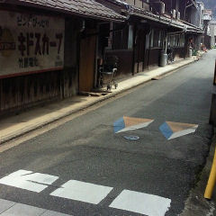
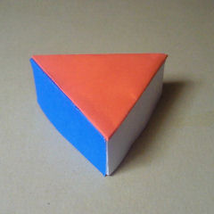
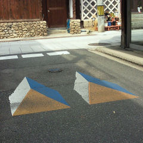
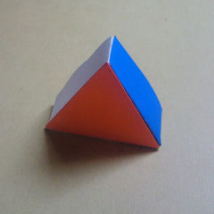

道路の表面に
描かれた標示。
三角形のブロックに
見えるだろうか？


逆の方向からは
違う置き方の
違う形（katachi）に
見えてしまう。
青い面と
白い面、
オレンジの面、
色と色が
隣り合う部分に
直角に尖った
エッジ（ふち）が
あるように見える。
しかし、
空間を移動しても
それに合わせて
その見え方は変化しない。
影もついてない。
本物の立体物では
ないという事は
少し遅れてわかる。
単なる平面図形を
立体的なモノとして
無意識に
知覚してしまう。
そして、ドライバーは
ぶつからないように
言葉による思考
とは異なる回路で
スピードを落とす。
これは、
そのために
仕組まれた
デザイン
である。